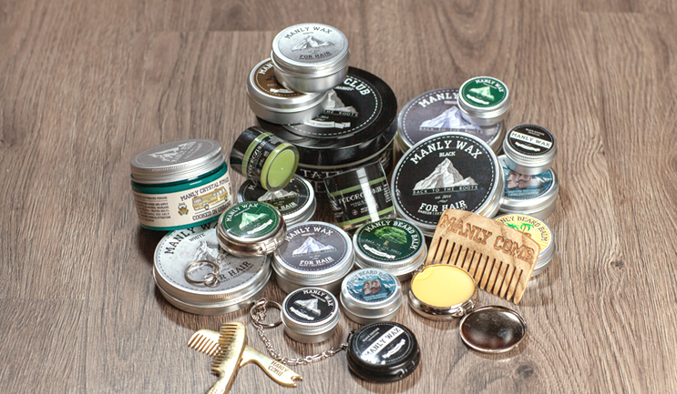

Как правильно пользоваться воском для усов и бороды MANLY WAX?
1. Укладываем усы (усы и руки должны быть сухими). Открой баночку свеженького MANLY WAX —---> Набери немного воска ногтем движением "от себя" —---> Разотри его между указательным и большим пальцем левой и правой руки —---> Равномерно распредели воск по усам, не подкручивая —---> *Аккуратно прочеши расческой, чтобы усы запоминали нужное тебе направление роста и воск рапределился максимально равномерно* (опционально) —---> Разотри дополнительное количество, чуть меньше того, что было ранее —---> Подкрути усы, придавая желаемую форму.
2. Укладываем бороду (борода и руки должны быть сухими). Разотри небольшое количество воска между ладонями (секунд 5 будет достаточно) —---> Приглаживающими движениями с легкостью укладываем бороду.
